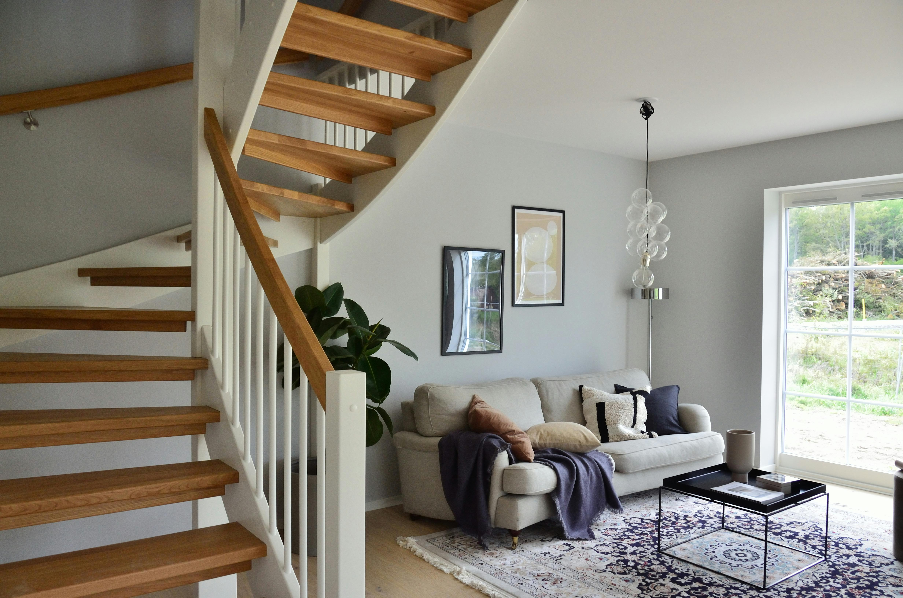

Jak dbać o drewniane meble w hiszpańskim klimacie?
Dowiedz się, jak pielęgnować meble, aby zachowały piękno mimo słońca i wilgotności na Costa del Sol.
Czytaj więcejSpecjalizujemy się w tworzeniu mebli na wymiar, renowacji oraz innych usługach stolarskich. Zaufaj nam – Twoje marzenia o idealnych meblach w końcu staną się rzeczywistością!
Firma XYZ to rodzinna firma stolarska działająca w Marbelli i na Costa del Sol. Od lat dostarczamy naszym klientom produkty o najwyższej jakości. Łączymy pasję, tradycję i nowoczesne technologie, tworząc meble dopasowane do indywidualnych potrzeb.
Działamy kompleksowo – od projektu po montaż. Stawiamy na wysoką jakość materiałów i ponadczasowy design, który doskonale wpasowuje się w śródziemnomorski klimat.

Tworzymy meble na wymiar, idealnie dopasowane do wnętrz w stylu hiszpańskim i nowoczesnym. Oferujemy szeroki wybór materiałów i wykończeń.

Odnawiamy i przywracamy blask starym meblom z domów i willi w Marbelli, dbając o ich oryginalny charakter i trwałość.

Wykonujemy schody, drzwi, blaty i inne elementy drewniane na zamówienie. Precyzja, estetyka i jakość — to nasza wizytówka.
Dowiedz się, jak pielęgnować meble, aby zachowały piękno mimo słońca i wilgotności na Costa del Sol.
Czytaj więcejIndywidualny projekt to komfort, trwałość i unikalny styl dopasowany do hiszpańskich wnętrz.
Czytaj więcejFirma XYZ - Usługi Stolarskie Marbella
Calle de los Naranjos 12
29602 Marbella, Hiszpania
Telefon: +34 600 000 000
E-mail: kontakt@firma-xyz.es
Godziny otwarcia:
Poniedziałek - Piątek: 9:00 - 18:00
Sobota: 9:00 - 15:00
Niedziela: nieczynne